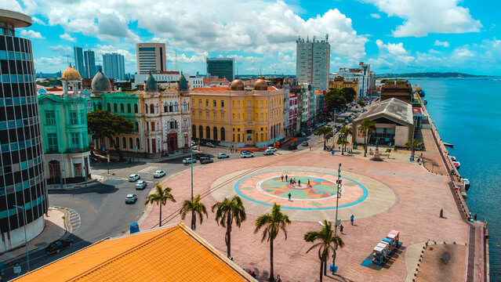
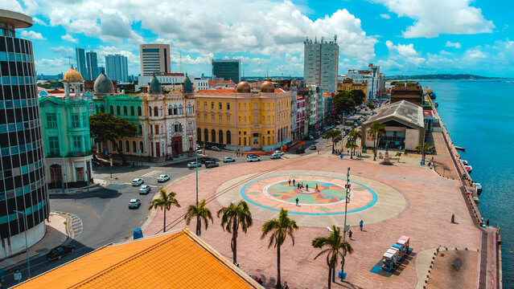

Sobre o Marco Zero
O Marco Zero é o ponto de partida das medidas oficiais de distâncias de Recife. Localizado no coração do Recife Antigo, é um dos principais cartões postais da cidade.
O Marco Zero é o ponto de partida das medidas oficiais de distâncias de Recife. Localizado no coração do Recife Antigo, é um dos principais cartões postais da cidade.
